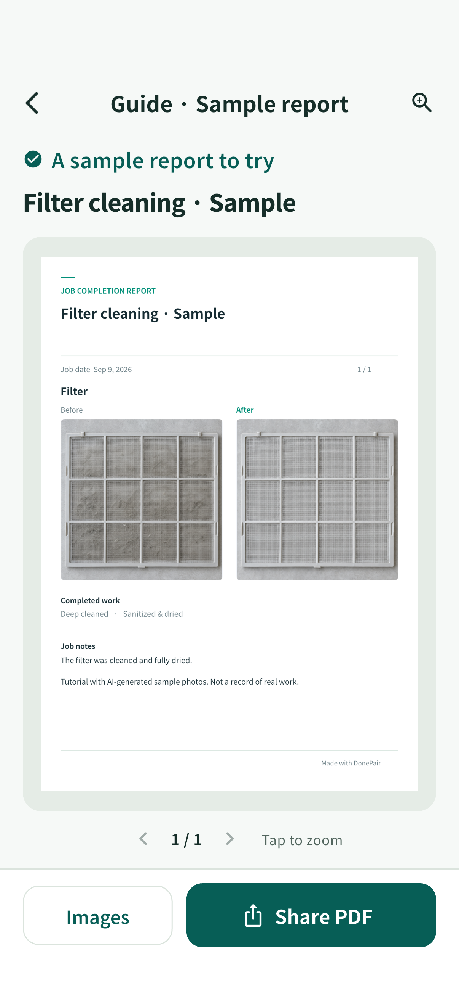

Before. After. Job done.
Let your work
speak for itself.
Pair the photos. Add the details. Hand over a clear report your customer can keep.
Get help with DonePairPreparing for App Store release · No account required

01
Show the difference.
Keep before and after photos of the same area together. Add up to eight photo pairs to a job.
02
Keep the details.
Add a job date, checklist, notes and your business contact details. Your records are stored on your device.
03
Share a clear report.
Create a PDF or image report, then use your phone's share sheet to send it or save a separate copy.
Ready in your language.
English, Korean, Japanese, Simplified Chinese and Traditional Chinese. DonePair starts with your supported phone language.